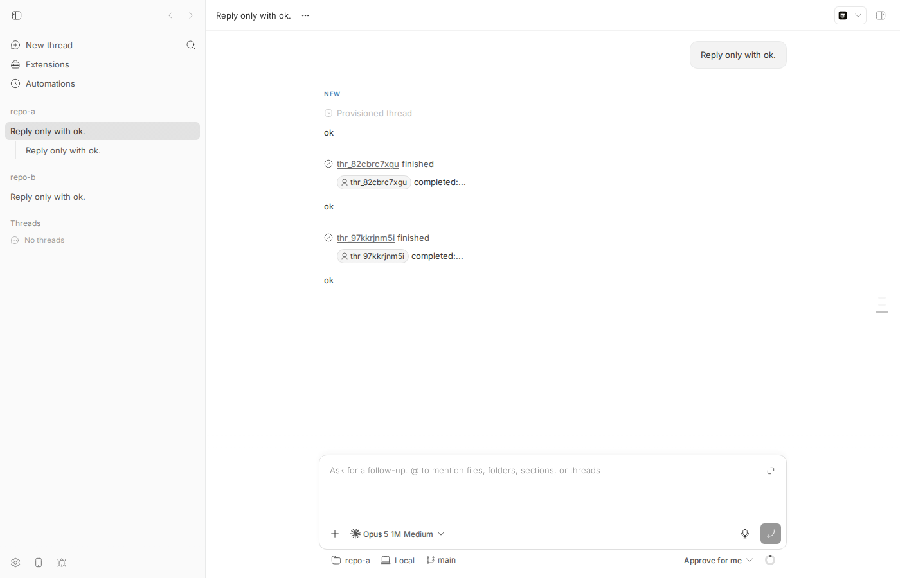
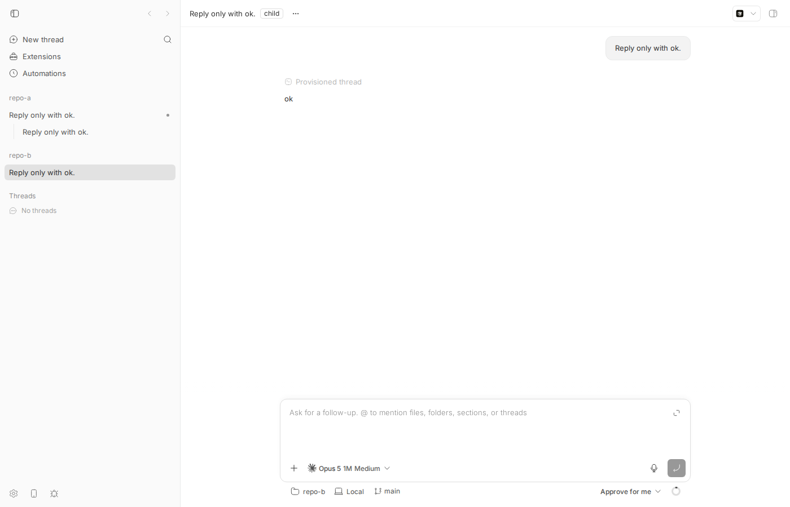

#1711 · Cross-project child thread creation rejects a valid parent thread
TL;DR
What the user sees. An agent running inside thread A (project repo-a) runs bb thread spawn --project <repo-b> --parent-self … to start a worker in a different project and have it report back. The CLI prints Error: Failed to create thread: HTTP 400: Parent thread is invalid and no thread is created. The same command with --project <repo-a> works.
What is actually happening. The server's parent validator, assertValidParentThread in apps/server/src/services/threads/thread-parent.ts, refuses any parent whose projectId differs from the new thread's projectId and returns 400 parent_thread_invalid with details.reason = "wrong_project". The parent in the report is live (not archived, not deleted); it is rejected purely because it lives in another project. This is not an accidental bug: the guard was written intentionally (see PR #235, June 2026, which removed the equivalent guard for peer messaging but explicitly kept the parent guard "project-scoped" because sidebar grouping and depth caps assume one project). The CLI additionally drops the machine-readable reason, so the user only sees the generic "Parent thread is invalid" and cannot tell why.
Does anything else break if the guard is removed? I removed the three-line check on my dev instance and re-ran the exact scenario: the cross-project child was created, ran, and its completion was posted into the parent's timeline as a child-completed system message (with the child's foreign projectId in the mention). So the notification pipeline is already project-agnostic. Two gaps remain and must be handled by a real fix: (1) isLiveParentThread (same file) also requires the same project and gates the parent permission ceiling from #1593 and the child's environment/visibility inheritance, so a naive removal would let a sandboxed parent spawn a full-access child in another project; (2) the sidebar builds the parent/child tree per project, so the child shows as a root row under repo-b instead of nested under its parent, and the parent's UI child list/count (per-project subset queries) will not include it. The issue's "clear indicator for the different project" does not exist yet.
Claims vs findings
| Claim | Status | Evidence |
|---|---|---|
Starting a child in another project with --parent-self fails with 400 Parent thread is invalid | Verified | Live repro on my dev instance (step 5 below): Error: Failed to create thread: HTTP 400: Parent thread is invalid, exit 1. Raw API body: {"code":"parent_thread_invalid",…"details":{"reason":"wrong_project","subject":"parent"}}. Unit repro test fails on main at the same assertion. |
| The parent thread is "valid" | Verified (live, unarchived, undeleted, depth 1) | The same parent accepted a same-project child seconds earlier (control, step 6). Only the projectId comparison at thread-parent.ts:161-163 rejects it. |
| The child "could not report completion to its parent" | Verified as a consequence | No child is created, so nothing can report. With the guard removed (experiment), the completion did reach the parent's timeline (child-completed row for thr_97kkrjnm5i, projectId proj_kd47iuy7n8), showing the notification path itself is not project-bound. |
| Expected: child remains under its parent in the thread view | Not the case today even with the guard removed | Sidebar grouping (projectThreadGroups.ts) only nests a child under a parent that is in the same project's thread list; a foreign parent makes the child a root row of its own project (screenshot below). The parent's child list uses a per-project subset query (ThreadDetailView.tsx:801-811). |
| Expected: a clear indicator for the different project | Does not exist | No UI code renders a project marker on child rows. Feature work, not a bug. |
| Implicit: this is a regression / accidental bug | Refuted | Guard exists since b2cd3c445 (2026-05-22, lifecycle-aware API errors) and was deliberately kept in PR #235 when the analogous sender guard was dropped. Not fixed on origin/main as of a108fa7ef. |
Environment
- Worktree
/home/sawyer/projects/bb/.claude/worktrees/wf_242c3e11-a10-9. Note: the worktree HEAD wasa108fa7ef(origin/main, 5 commits ahead of the brief's base16ceb3a54);git diff 16ceb3a54 a108fa7efoverapps/server/src/services/threads,apps/server/src/routes/threads,apps/cli/src/commands/threadandpackages/server-contract/srctouches only an unrelated timeline file, so all excerpts and permalinks below are identical at the base commit. - Linux 7.0.0-29-generic (host "bee"), node v24.18.0, pnpm workspace, Claude Code 2.1.234 (provider
claude-code, model Opus 5 1M), codex-cli 0.147.0 (not used). - Dev instance: app
:14764, server:22764, host daemon:30764, data dir/home/sawyer/.bb-dev/projects-bb-.claude-worktrees-wf_242c3e11-a10-9-af1f7a74646c, host idhost_tidkqprk2n. - Projects:
proj_smvrtcnbe4(repo-a,/tmp/bb1711-a) andproj_kd47iuy7n8(repo-b,/tmp/bb1711-b). Parent threadthr_3djzm7bexf(repo-a). Same-project control childthr_82cbrc7xgu. Cross-project child (only with the guard patched out)thr_97kkrjnm5i.
Minimal reproduction
A. Unit-level (no dev instance, ~1 s)
Test file: 1711/repro/thread-parent-cross-project.repro.test.ts. Copy it to apps/server/test/threads/ and run from apps/server: pnpm exec vitest run test/threads/thread-parent-cross-project.repro.test.ts. It creates two projects in in-memory SQLite, a live thread in project A, and calls assertValidParentThread with project B. Full output: unit-test-output.clean.txt.
// Repro for get-bb/bb#1711: a live parent thread in another project is
// rejected by assertValidParentThread with reason "wrong_project".
import {
createConnection,
createProject,
createThread,
migrate,
noopNotifier,
upsertHost,
} from "@bb/db";
import { describe, expect, it } from "vitest";
import { ApiError } from "../../src/errors.js";
import { assertValidParentThread } from "../../src/services/threads/thread-parent.js";
function setup() {
const db = createConnection(":memory:");
migrate(db);
const host = upsertHost(db, noopNotifier, {
name: "test-host",
type: "persistent",
});
const { project: projectA } = createProject(db, noopNotifier, {
name: "project-a",
source: { hostId: host.id, path: "/tmp/bb1711-a", type: "local_path" },
});
const { project: projectB } = createProject(db, noopNotifier, {
name: "project-b",
source: { hostId: host.id, path: "/tmp/bb1711-b", type: "local_path" },
});
return { db, projectA, projectB };
}
describe("issue #1711: cross-project parent thread", () => {
it("accepts a live, non-archived parent thread that lives in another project", () => {
const { db, projectA, projectB } = setup();
// Parent lives in project A and is perfectly healthy.
const parentThread = createThread(db, noopNotifier, {
projectId: projectA.id,
providerId: "codex",
});
expect(parentThread.archivedAt).toBeNull();
expect(parentThread.deletedAt).toBeNull();
// A child is being created in project B with --parent-thread <A's thread>.
let error: ApiError | null = null;
try {
assertValidParentThread(
{ db },
{ parentThreadId: parentThread.id, projectId: projectB.id },
);
} catch (caught) {
if (!(caught instanceof ApiError)) throw caught;
error = caught;
}
// On main this fails: the server answers
// 400 parent_thread_invalid "Parent thread is invalid" { reason: "wrong_project" }
expect(error).toBeNull();
});
});
Actual on main — the expect(error).toBeNull() assertion at line 58 fails:
FAIL @bb/server test/threads/thread-parent-cross-project.repro.test.ts > issue #1711: cross-project parent thread > accepts a live, non-archived parent thread that lives in another project
AssertionError: expected Error: Parent thread is invalid { …(3) } to be null
- Expected:
null
+ Received:
ApiError {
"message": "Parent thread is invalid",
"res": undefined,
"status": 400,
"body": {
"code": "parent_thread_invalid",
"details": {
"reason": "wrong_project",
"subject": "parent",
},
"message": "Parent thread is invalid",
},
}
❯ test/threads/thread-parent-cross-project.repro.test.ts:58:19
B. Live CLI repro (exactly the reporter's flow)
- Build and start a dev instance:
pnpm install --frozen-lockfile --prefer-offline && pnpm exec turbo run build && scripts/bb-dev-app current. Export what it prints:export BB_SERVER_URL=http://localhost:22764 BB_HOST_DAEMON_PORT=30764(your ports differ). Below,bb=node packages/scripts/dist/commands/run-cli.jsrun from the worktree root. - Two scratch git repos:
mkdir -p /tmp/bb1711-a /tmp/bb1711-b, then in each:echo hi > README.md && git init -q && git add . && git commit -qm init. - Host id:
bb machine list --json→host_tidkqprk2n. Two projects (outputs: project-a.json, project-b.json):curl -s -X POST $BB_SERVER_URL/api/v1/projects -H 'content-type: application/json' \ -d '{"name":"repo-a","source":{"type":"local_path","path":"/tmp/bb1711-a","hostId":"host_tidkqprk2n"}}' # → {"id":"proj_smvrtcnbe4", …} curl -s -X POST $BB_SERVER_URL/api/v1/projects -H 'content-type: application/json' \ -d '{"name":"repo-b","source":{"type":"local_path","path":"/tmp/bb1711-b","hostId":"host_tidkqprk2n"}}' # → {"id":"proj_kd47iuy7n8", …} - Parent thread in repo-a (parent-spawn.json):
bb thread spawn --project proj_smvrtcnbe4 --provider claude-code --environment /tmp/bb1711-a --prompt "Reply only with ok." --json # → "id": "thr_3djzm7bexf", "projectId": "proj_smvrtcnbe4", "archivedAt": null, "deletedAt": null, "canSpawnChild": true
- Act as that thread (this is what
--parent-selfreads) and spawn a child in repo-b (child-spawn-cross-project.txt):$ BB_THREAD_ID=thr_3djzm7bexf BB_PROJECT_ID=proj_smvrtcnbe4 \ bb thread spawn --project proj_kd47iuy7n8 --provider claude-code --environment /tmp/bb1711-b --parent-self --prompt "Reply only with ok." Error: Failed to create thread: HTTP 400: Parent thread is invalid exit=1
Expected: a thread in repo-b withparentThreadId = thr_3djzm7bexf. Actual: HTTP 400, no thread. The raw API shows the reason the CLI hides (child-spawn-cross-project-api.txt):$ curl -s -i -X POST $BB_SERVER_URL/api/v1/threads -H 'content-type: application/json' -d '{"origin":"cli","projectId":"proj_kd47iuy7n8","providerId":"claude-code","input":[{"type":"text","text":"Reply only with ok."}],"environment":{"type":"host","hostId":"host_tidkqprk2n","workspace":{"type":"unmanaged","path":"/tmp/bb1711-b"}},"startedOnBehalfOf":null,"originKind":null,"parentThreadId":"thr_3djzm7bexf"}' HTTP/1.1 400 Bad Request content-type: application/json {"code":"parent_thread_invalid","message":"Parent thread is invalid","details":{"reason":"wrong_project","subject":"parent"}} - Control: same command with
--project proj_smvrtcnbe4 --environment /tmp/bb1711-a(same project as the parent) succeeds (child-spawn-same-project.txt):Thread spawned: thr_82cbrc7xgu You will be notified when this thread is done. ID: thr_82cbrc7xgu Project: proj_smvrtcnbe4 exit=0
C. Experiment: what happens if the guard is removed
To learn whether the rest of the system tolerates a foreign parent, I deleted the three-line wrong_project check (experiment-allow-cross-project.diff), restarted the dev instance and re-ran step 5 verbatim (child-spawn-cross-project-PATCHED.txt):
Thread spawned: thr_97kkrjnm5i You will be notified when this thread is done. ID: thr_97kkrjnm5i Project: proj_kd47iuy7n8 exit=0 $ bb thread wait thr_97kkrjnm5i --timeout 90 Thread thr_97kkrjnm5i reached status idle. $ bb thread show thr_97kkrjnm5i --json # → parentThreadId: thr_3djzm7bexf, projectId: proj_kd47iuy7n8
The parent's timeline (parent-timeline-after-patch.json) received the child's completion, exactly like the same-project child; note the mention carries the child's foreign projectId:
"text": "[bb system]\n\n@thread:thr_97kkrjnm5i completed:\n\nok",
"mentions": [{ "resource": { "kind": "thread", "threadId": "thr_97kkrjnm5i", "projectId": "proj_kd47iuy7n8", … } }],
"systemMessageKind": "child-completed"

thr_3djzm7bexf (repo-a) shows "thr_82cbrc7xgu finished" (same-project child) and "thr_97kkrjnm5i finished" (cross-project child). Look at the sidebar on the left: under repo-a the same-project child is nested with an indent guide, but the cross-project child appears as a top-level row under repo-b, not under its parent.
The patch was reverted afterwards (git checkout apps/server/src/services/threads/thread-parent.ts); the worktree contains only the repro test.
Root cause
Mechanism. POST /api/v1/threads (and bb thread spawn, which builds that request in resolveSpawnParentThreadId: --parent-self simply copies BB_THREAD_ID into parentThreadId) reaches createThreadRequest, which validates a hierarchy parent with assertValidParentThread(deps, { parentThreadId, projectId: requestInput.projectId }) (thread-create.ts#L646-L651). The validator compares the parent's project with the new thread's project and throws:
// apps/server/src/services/threads/thread-parent.ts#L151-L169
export function assertValidParentThread(deps, args): Thread {
const parentThread = getThread(deps.db, args.parentThreadId);
if (parentThread === null) {
throwParentThreadInvalid("not_found");
}
const liveParentThread: Thread = parentThread;
if (liveParentThread.projectId !== args.projectId) {
throwParentThreadInvalid("wrong_project"); // ← #1711
}
if (liveParentThread.archivedAt !== null) { throwParentThreadInvalid("archived"); }
if (liveParentThread.deletedAt !== null) { throwParentThreadInvalid("deleted"); }
…depth checks…
Permalink: thread-parent.ts#L151-L169. throwParentThreadInvalid (lifecycle-api-errors.ts#L178-L187) produces the exact 400 parent_thread_invalid / "Parent thread is invalid" body observed. The same validator is used by PATCH /threads/:id re-parenting (base.ts#L342-L349) and by fork/side-chat spawn allowance (thread-create.ts#L672-L678), so re-parenting to a foreign thread fails identically.
Why the CLI message is uninformative. The SDK's BbHttpError message is HTTP 400: Parent thread is invalid; the CLI's prependErrorContext (apps/cli/src/commands/helpers.ts:139) only prefixes it. The details.reason ("wrong_project") that the app maps to "Choose a parent thread from this project." (lifecycle-errors.ts#L391-L395) is never printed by the CLI, which is why the reporter perceived a "valid" parent being rejected for no reason.
Deliberate, not accidental. The wrong_project reason was introduced in b2cd3c445 ("add lifecycle-aware API error details", 2026-05-22) and is part of the public contract (packages/server-contract/src/errors.ts:99). PR #235 removed the identical guard for bb thread tell sender attribution but wrote: "The create/fork hierarchy guard (assertValidParentThread) is intentionally left project-scoped — that governs parent/fork structure (sidebar grouping, depth caps), not peer-to-peer messaging." So the issue is a product decision to revisit, and the "expected result" is a feature request.
Deeper coupling a fix must respect. The same-project assumption is duplicated in isLiveParentThread (args.parentThread.projectId === args.projectId). That predicate, via isManagedChildThread (thread-default-policy.ts#L155-L163), decides whether a child (a) inherits its parent's execution permission mode and, more importantly, is clamped to the parent's mode as a ceiling (#L344-L373, the fix for #1593), and (b) gets the implicit managed-worktree / personal-environment defaults (#L297-L330). Removing only the assertValidParentThread check (what my experiment did) would create a real regression: an auto-mode parent could spawn a --permission-mode full child in another project and the ceiling would not apply, because isLiveParentThread would say "not a managed child". Conversely, the personal-project branch that reuses the parent's environment must stay same-project, because environments are project-owned ("Environment belongs to a different project", thread-request-eligibility.ts:186).
Everything else I traced is already project-agnostic: listNonDeletedChildThreads/countNonDeletedAssignedChildThreads filter by parent_thread_id only; child-completed / failed / blocked notifications (child-thread-notifications.ts, internal/events.ts, interactive-requests.ts) never look at projectId; the sidebar tolerates a parent missing from the project's list by promoting the child to a root (projectThreadGroups.ts:309-311, 336-341).
Proposed fix (first principles)
Confidence high on the mechanism; the product decision (allow cross-project parents) is the maintainers' call. If allowed:
- Server policy (
thread-parent.ts). Delete thewrong_projectbranch inassertValidParentThread. SplitisLiveParentThreadinto a project-agnosticisLiveParentThread(non-null, not archived, not deleted) used for the permission ceiling, visibility inheritance and "managed child" semantics, and keep the project comparison only where the parent's environment is reused (the personal-project branch ofresolveCreateThreadEnvironment) — reusing a foreign project's environment must remain impossible. Add a test inthread-default-policy.test.tsproving a cross-project child of anautoparent requestingfullis clamped toauto. - Contract. Remove
"wrong_project"fromParentThreadInvalidReasoninpackages/server-contract/src/errors.tsand the app'slifecycle-errors.tsmapping (and the contract test), like #235 did for the sender variant. NoHOST_DAEMON_PROTOCOL_VERSIONbump: nothing between server and daemon changes. - Depth/cycle checks already walk by id, so they keep working across projects; keep them.
- UI. Nest cross-project children:
projectThreadGroups.tscurrently drops children whose parent is not in the same project list; either keep them as roots with a "from <project>" indicator, or fetch the parent lazily. The parent's child list/count inThreadDetailView.tsxusesuseProjectThreadSubset({projectId, filters:{parentThreadId}})and needs a project-agnostic children query. Also update the CLI/guide text ("Parent to the current thread") inbb-guide-threads.mdand the bb-cli skill if cross-project is now supported. - Independent quick win. Have the CLI print
details.reasonforparent_thread_invalid(e.g. "Parent thread is invalid (wrong_project): the parent must be in the same project") so users are not left guessing, whichever way the policy goes.
Risk: (1) is where a mistake becomes a permission escalation; the test in step 1 is the guard. Depth cap now spans projects, which is the intended semantics of a hierarchy.
Related issues
- PR #235 "Allow cross-project sender attribution for thread messages" (merged 2026-06-18) — the same guard for peer messaging was removed; the parent guard was explicitly kept. Direct precedent for the change.
- #1593 "Child threads can run with more permissions than their parent" (closed) — the ceiling it introduced is keyed on
isLiveParentThread, which a cross-project fix must keep engaged. - #1512 "Nest fork threads under their source in the default sidebar" — sidebar hierarchy work in the same area.
- #1768 child-thread notification discoverability — adjacent to the notification path exercised in experiment C.
Appendix
Files
- repro test, its output
- CLI failure, raw API failure, same-project control
- experiment diff, spawn with guard removed, parent timeline after patch, dev-browser screenshot script
- Logs: install.log">build.log, dev-start.log, dev-start2.log (after patch), dev-stop2.log
Commands run (in order)
gh issue view 1711 --repo get-bb/bb --json title,body,labels,state,createdAt,author,comments,url pnpm install --frozen-lockfile --prefer-offline pnpm exec turbo run build grep -rn "Parent thread is invalid" apps packages # → lifecycle-api-errors.ts grep -rn "wrong_project" apps packages # → thread-parent.ts:162, errors.ts:99, lifecycle-errors.ts:391 git log -S"wrong_project" --oneline # → b2cd3c445 (2026-05-22) git fetch origin main; git log 16ceb3a54..origin/main --oneline -- apps/server/src/services/threads/thread-parent.ts # (empty → not fixed) (cd apps/server && pnpm exec vitest run test/threads/thread-parent-cross-project.repro.test.ts) # FAILS on main scripts/bb-dev-app current # app :14764 server :22764 daemon :30764 git -C /tmp/bb1711-a init … ; git -C /tmp/bb1711-b init … node packages/scripts/dist/commands/run-cli.js machine list --json # host_tidkqprk2n curl -s -X POST $BB_SERVER_URL/api/v1/projects … repo-a / repo-b node packages/scripts/dist/commands/run-cli.js thread spawn --project proj_smvrtcnbe4 --provider claude-code --environment /tmp/bb1711-a --prompt "Reply only with ok." --json BB_THREAD_ID=thr_3djzm7bexf … thread spawn --project proj_kd47iuy7n8 --environment /tmp/bb1711-b --parent-self … # HTTP 400 curl -s -i -X POST $BB_SERVER_URL/api/v1/threads … "parentThreadId":"thr_3djzm7bexf" # reason wrong_project BB_THREAD_ID=thr_3djzm7bexf … thread spawn --project proj_smvrtcnbe4 --parent-self … # OK (control) python3 (remove wrong_project branch) ; pnpm dev:stop ; scripts/bb-dev-app current BB_THREAD_ID=thr_3djzm7bexf … thread spawn --project proj_kd47iuy7n8 --parent-self … # OK with patch → thr_97kkrjnm5i node … thread wait thr_97kkrjnm5i --timeout 90 ; curl $BB_SERVER_URL/api/v1/threads/thr_3djzm7bexf/timeline dev-browser --browser bb1711 --headless run shot-child.js (screenshots) git checkout apps/server/src/services/threads/thread-parent.ts ; pnpm dev:stop gh issue list / gh pr list searches for related items; gh pr view 235
Verbatim: same-project child accepted seconds earlier by the same parent
Thread spawned: thr_82cbrc7xgu You will be notified when this thread is done. ID: thr_82cbrc7xgu Project: proj_smvrtcnbe4 Status: starting Created: 8/18/2026, 7:18:01 AM Updated: 8/18/2026, 7:18:01 AM exit=0